graphty logo concepts -- round 1
Eight hand-built SVG concepts from four designers. A-D are the director's picks, in rank-ish order; E-H are the rest, marks only, to borrow ideas from. Refer to them by letter ("A with C's colors").
graph-g
Graphic designerA two-storey lowercase "g" built as a graph: the bowl and the lower loop are two ring nodes joined by an edge, and the ear is a third, amber node. It is the name and a graph at once, and reads as a "g" at 16 px.
Mark on light
Mark on dark
One color
Lockup
Package family (64 / 32 / 16 px)

Colors
Director's notes
- Ranked 1st (27/30). Cleanest "g" of the eight at 16 px; one-color and dark versions hold up; plain geometry.
- Clearly distinct from Graphistry's single-storey "g" with a tail node.
- Risk: can read slightly as a female symbol or a key.
- Family: bowl ring + amber ear + a symbol inside. Symbols only show from about 24 px; the algorithms path looks like a stock chart and the graph-format matrix blurs at 16 px.
- Recommended round-2 direction: A's mark on B's cobalt-tile family, one amber node per icon, two-letter codes at 16 px where a symbol does not read.
loop-g
Outbound marketerA double-storey "g" whose lower loop is a self-loop edge and whose ear is the one selected (amber) node. Every icon in the family carries exactly one amber node, and every library is a cobalt tile with one white glyph.
Mark on light
Mark on dark
One color
Lockup
Package family (64 / 32 / 16 px)
Colors
Director's notes
- Ranked 2nd (25/30). Best family system of the eight: one cobalt tile, one white symbol, one amber node; the symbols read at 16 px and the rule scales to all 11 packages.
- The mark itself is weaker than A: the pill-shaped lower loop reads as a snowman or a person in a tub.
- Round-2 suggestion: put A's mark on this tile family.
depth
Brand strategistFour nodes on a leaning line, shrinking with distance and joined by tapered edges: a graph drawn in perspective. It carries graphty-element's 2D/3D difference in the geometry alone, as one filled silhouette.
Mark on light
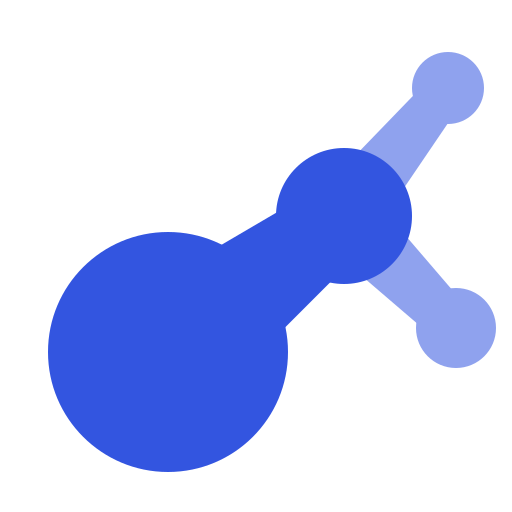
Mark on dark
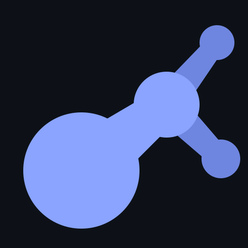
One color
Lockup
Package family (64 / 32 / 16 px)
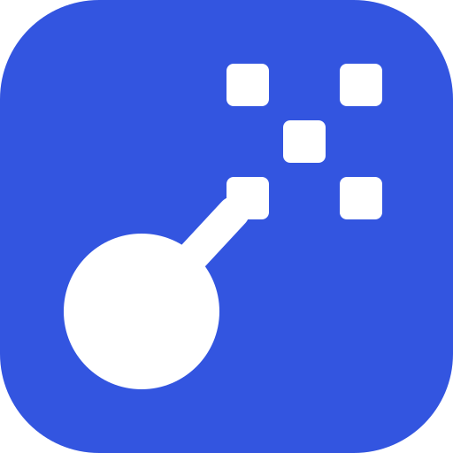
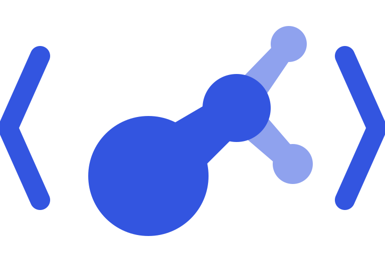
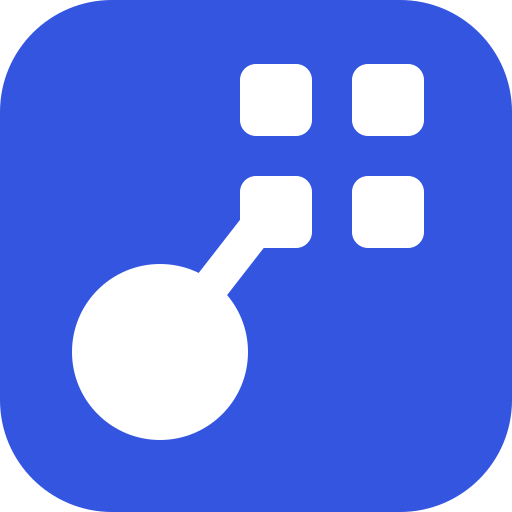
Colors
Director's notes
- Ranked 3rd (23/30). Strongest non-letter silhouette at 16 px.
- Clearly its own shape next to Cytoscape's hub and spokes.
- Risk: can read as a matchstick, guitar or music note.
- Below 32 px every library tile looks like "a tile with a dot"; needs a two-letter fallback.
- Does not carry the name, so it fits analysts better than developers. Keep as the pictorial alternative.
depth-graph
Graphic designerOne large near node and three smaller far nodes joined by tapered edges, with one thin edge closing a cycle. Node size and taper show depth; each library draws a different small graph from the same near node.
Mark on light

Mark on dark
One color
Lockup
Package family (64 / 32 / 16 px)
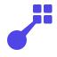
Colors
Director's notes
- Ranked 5th (21/30); shown for range, so you see two letter marks and two pictorial marks.
- A real drawn graph with a gesture, which analysts recognize.
- Closest of all concepts to Cytoscape's mark.
- At 16 px it turns into a blob that reads as "R" or "k". The graph-io icon looks like a generic external-link arrow.
Other concepts (E-H)
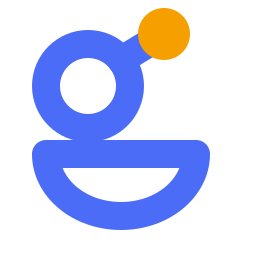
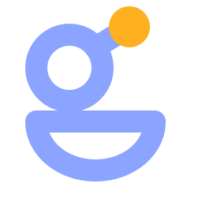
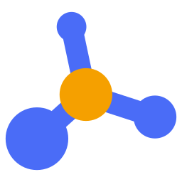
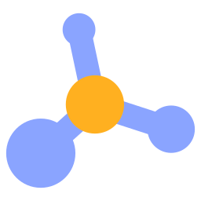
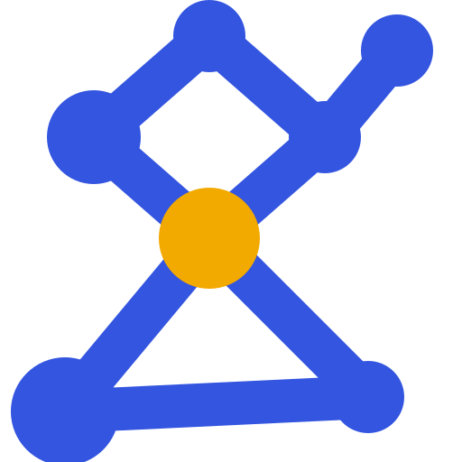
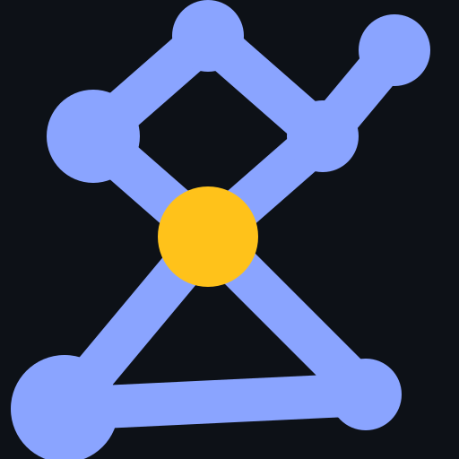
Director's reference sheets
All eight at 16 and 32 px, unsmoothed -- nearest marks in the field: Graphistry, Cytoscape, yWorks, Neo4j (logos not kept here; see ref/README.md)